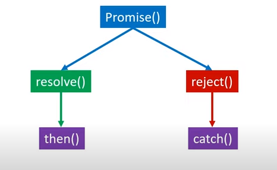

Promise is method in advance Javascript. Before moving toward any heavy definition let's understand Promise with an example. Suppose a guy named xyz asked his friend to meet at a Resturant and his friend promised him that they will meet tomorrow. The Promise taken by the friend of xyz can be divided into three stages -
1. Pending - Till the day arrive the Promise will remain Pending.
2. Fulfiled - If xyz meet his friend tomorrow, the promise will get fulfiled.
3. Rejected - If they can't meet, the promise will get rejected.
In Javascript the promise method work like the above example. In this method, we basically specify a condition and on the basis of that condition two outcomes are possible. Either the condition will get fulfiled (we can say the condition is resolved) or condition will get failed i.e. the condition is rejected.
If condition of a problem get resolved, then we can use then() function. In then() function we use to define that what we will do if condition get fulfiled. And if condition of a problem gets rejection, then we use catch() function. In catch() function we define what will be our next decision or step if condition gets rejected. Both then() and catch() functions are call back function. They are inbuilt fuctions. These function will automaticaly called when we call resolve() or reject() function.
